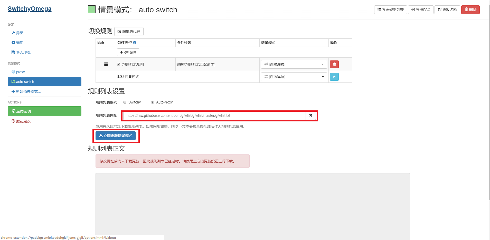

SwitchyOmega 是 优秀的代理管理与切换的浏览器插件，通过该插件，可以优雅的切换各个代理，实现不同的站点，走不同的代理的功能。 本教程以chrome为例，介绍SwitchyOmega的基本用法。
项目地址： https://github.com/FelisCatus/SwitchyOmega
首先打开chrome应用商店，搜索SwitchyOmega
点击添加至Chrome,在接下来的提示中选择添加扩展程序，chrome将自动下载SwitchyOmega并安装。
安装完成后将会出现在chrome的扩展程序栏中。
右键点击SwitchyOmega图标，选择选项，将打开如下图所示的页面。
点击跳过教程,在左侧情景模式一栏中，打开proxy选项，在代理协议那里选择SOCKS5,
代理服务器处填写127.0.0.1，代理端口处填写你代理软件所监听的端口号。
查询对应代理软件监听端口号，可以在相应的软件教程中找到。本人的代理软件监听1080端口，所以此处我填写1080，请根据实际情况填写。完成后点击应用选项，保存设置。
依旧点击左侧情景模式一栏中的auto switch选项。在规则列表设置选项卡中，点击添加规则列表。如下图所示。
在规则列表格式标签上，选择AutoProxy,并删除最上面几个实例规则。
在规则列表网址那里输入
https://raw.githubusercontent.com/gfwlist/gfwlist/master/gfwlist.txt
点击此处复制
立即更新情景模式

弹出提示，选择应用选项，此时SwitchyOmega会自动获取分流规则。
在切换规则选项框中，我们将条件设置为 (按照规则列表匹配请求)后面的情景模式设置为我们前面配置的情景模式。点击应用选项保存设置。
此时，在此点击浏览器上的SwitchyOmega图标，选择auto switch，即可在访问被墙站点时，自动走代理访问。
SwitchyOmega同时也支持firefox，其情景模式支持多种规则（自定义，PAC，GFWList）自动切换，非常方便。具体功能还需要各位自行探索。